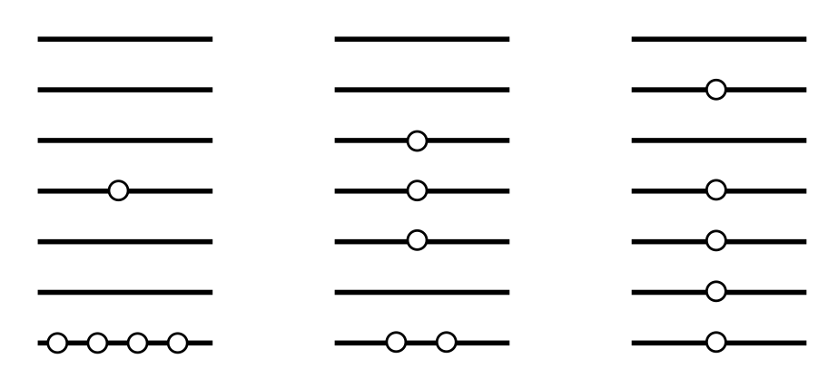

Questions 17 - 34
Contents
Questions 17 - 34#
Q17 Permutation#
The permutation of \(1, 2, 3, 4, 5\) produces a five digit number. If these permutations are listed in order of increasing value, what is the \(33^\mathrm{rd}\)?
Strategy: Do not enumerate the numbers, but split them into five groups of \(24\), then \(4\) groups of \(3\) etc.
Q18 Isotopes#
Carbon consists of two common isotopes \(^{12}\)C and \(^{13}\)C. \(^{12}\)C is defined to have a relative atomic mass of exactly 12, whereas tables give the value of C as 12.011.
(a) What is the fraction of \(^{13}\)C present in a normal sample of carbon?
(b) What is the chance that two \(^{13}\)C nuclei are present in an ethane molecule, \(\mathrm{C_2H_6}\)?
(c) An ethane molecule has to have at least one \(^{13}\)C if a \(^{13}\)C NMR spectrum is to be recorded. What is the chance of this occurring? If the magnetogyric ratio of \(^{13}\)C is \(\gamma = 6.728 \cdot 10^7\) and for protons \(\gamma = 26.75 \cdot 10^7 \mathrm{rad\; T^{-1}\; s^{-1}}\) how much smaller is the \(^{13}\)C NMR spectrum than the H spectrum, if the NMR spectrometer’s sensitivity is proportional to \(\gamma^3\)?
Q19 Genetics#
In the study of genetics, probability can be used to predict the fraction of offspring with various traits. Animals or plants can have dominant \(A\) or recessive \(a\) genes which can mix to give offspring with genetic make up AA, Aa and aa.
(a) If \(p\) is the fraction of a population with gene \(A\) and \(q = 1 - p\) with \(a\), what is the incidence of individuals with \(AA, Aa\) and \(aa\) genes?
(b) The trait associated with a recessive gene a only manifests itself in an individual with a genetic makeup \(aa\). What is the chance that an individual without this trait has one a gene?
Q20 Chance of finding no air in a room#
It is possible, but extremely unlikely, that due to random thermal motions all the air molecules in a room will occupy just its top part. Assuming that the molecules do not interact, calculate:
(a) What is the chance a molecule will only occupy \(V_A\) if a room is split into two volumes \(V_A\) and \(V_B\)?
(b) What is the chance that all molecules occupy \(V_A\), if the volumes are equal, and there are \(100\), and then \(1000\) gas molecules in the total volume?
(c) If the entropy is defined as \(S = k_B\ln(\Omega)\) where \(k_B\) is Boltzmann’s constant and \(\Omega\) the probability what is the entropy change upon isothermally expanding \(N\) gas molecules from \(V_A \to V_A + V_B\)?
Q21 DNA bases#
(a) In DNA there are four bases labelled G, C, A, T. If three bases encode an amino acid, how many amino acids could there be ?
(b) If only twenty amino acids exist, how many \(100\) amino acid proteins are possible?
Q22 Distinguishable particles#
List all the distinguishable arrangements of two distinguishable particles in three degenerate energy levels.
Q23 Atom configuration#
A nitrogen atom has the configuration \(2s^3\,2p^3\) and an Fe atom \(2p^6\,3d^6\). How many states are expected in each case?
Q24 Number of microstates#
A microstate in an atom comprises each conceivable set of the \(m_s\) and \(m_l\) quantum numbers for, for example, a configuration such as \(p^2\) or \(d^5\), and is therefore the total degeneracy of the configuration. The electron in any of the five degenerate \(d\) orbitals has \(m_l\) orbital quantum numbers with values \(-2, -1, 0, 1, 2\) but only two \(m_s\) values, \(\pm 1/2\). If there is one electron then there are \(10\) ways of distributing this in \(d\) orbitals producing \(10\) microstates; colloquially put, the electron can be ‘spin up’ or ‘spin down’ in each of five orbitals. The configurations of \(d\) orbitals run from \(d^0 \to d^{10}\), scandium to copper. How many microstates are their in each configuration?
Q25 Distinguishable states#
How many distinguishable states will be produced if five quanta are distributed in a doubly degenerate vibration and how many in a triply degenerate one?
Q26 Distribution among energy levels#
Figure 24 shows a few of the ways in which five identical particles can be distributed among seven energy levels. Work out the ratio of the probabilities with which each of these distinguishable arrangements is produced.

Figure 24 Some of the distributions of five quanta among seven levels
Q27 \(\mathrm{H_2 + D_2 = 2HD}\) equilibrium constant#
It is tempting to suppose that the reaction \(\mathrm{H_2 + D_2 = 2HD}\) has an equilibrium constant \(K = 1\), because of the random distribution of H and D isotopes, but this would be wrong, because \(K = 4\). If \(f_H\) is the fraction of H atoms (protium) and \(f_D\) that of deuterium the fraction by random mixing in H\(_2\) is \(f_H^2\), in D\(_2\) is \(f_D^2\) and in HD is \(2f_D f_H\). The factor 2 arises because of the two ways of arranging H and D - just as with two coins. The equilibrium constant is therefore
As there is no energy change in the reaction, (there is no isotope fractionation), the randomization of the isotopes is the driving force for the reaction, i.e. \(\Delta_rH = 0\) and the reaction is caused by an increase in entropy and \(\Delta G = -RT \ln(4)\).
Calculate the equilibrium constant \(K\) for each reaction, assuming \(\Delta_rH = 0\);
(a) HCOOH + DCOOD = HCOOD + DCOOH
(b) \(\mathrm{P^{35}Cl_3 + P^{37}Cl_3 = P^{37}Cl_2^{35}Cl + P^{35}CL_2^{37}Cl}\)
(c) \(\mathrm{C^{35}Cl_4 + C^{37}Cl_4 = 2C^{37}Cl_2^{35}Cl_2}\)
Strategy: Calculate the fraction of each isotopic atom in a molecule, and multiply by the number of ways this can be achieved.
Q28 Favourable odds?#
In the eighteenth century the Chevalier de Mere made a fortune by betting on small but favourable odds that at least one six would appear in four throws of a die. He lost his fortune in small favourable odds of throwing at least two sixes in 24 throws. Work out the probabilities in each case and explain what happened.
Q29 Cards#
Two cards are drawn simultaneously from two groups of cards which are {AD, 2H, 1C, 2C, 3C} and {AD, 2H, 3H, 1C} (where AD is the ace of diamonds, 1C the 1 of clubs etc.). Using equation 23
(a) what is the chance of getting at least one club,
(b) at least an ace,
(c) at least one cards less than 4?
Q30 How many can taste PTC?#
The compound phenylthiocarbamide (PTC) has no taste to some individuals but is bitter to others. This trait is controlled by a single gene with the allele for bitter taste being dominant. If the dominant allele is B and the recessive b,
(a) Over a whole population by selecting just those heterozygous tasters who have children, what fraction will be able to taste the PTC?
(b) What is the chance that each of the first four children, and what fraction of all children, will be non-tasters?
(c) Of these children what is the chance that any of their children will be a tasters?
Q31 Run of zeros in a number#
If (a) \(10\), (b) \(100\), (c) \(1000\) random digits, \(0 \to 9\) are chosen, what is the chance of finding a run of half of the total numbers which are each zero?
Strategy: In (b) and (c) first calculate the log of the probability by using Stirling’s approximation for the factorial in the binomial distribution.
Q32 Fraction of boy vs. girl babies#
When a whole population is considered, boys and girls are born with equal frequency.
(a) What fraction of families with six children is expected to have four girls?
(b) How is this fraction changed if the birth ratio is \(3:2\) in favour of girls?
Q33 Binomial coefficients#
Prove the following relationships between binomial coefficients
Q34 CAS registry numbers#
The CAS registry numbers for pheophytin-a (chlorophyll-a with the Mg atom replaced by two H atoms), retinal and trans-stilbene are \(100759 - 86 - x,\; 116 - 31 - x\), and \(103 - 30 - x\) respectively. Work out their check-sum numbers \(x\) then look them up to confirm their values. Pheophytin-A also has the index \(603-17-x\) so work this one out as well.